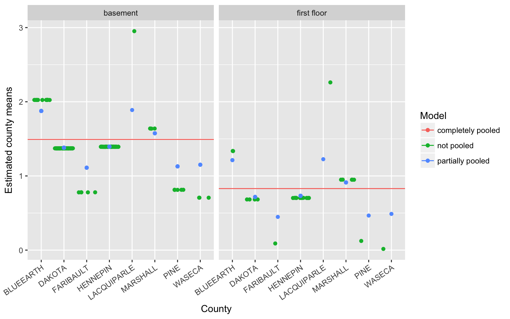

16.4 Fitting models in R
Complete Pooling
The complete pooling model is fit with the function lm, and is only modeled by 1 and no covariates. This is the simple mean model, and is equivelant to estimating the mean.
fit_completepool <- lm(log_radon ~ 1, data=radon)
fit_completepool
##
## Call:
## lm(formula = log_radon ~ 1, data = radon)
##
## Coefficients:
## (Intercept)
## 1.265
mean(radon$log_radon)
## [1] 1.264779No Pooling
The no pooling model is also fit with the function lm, but gives each county a unique intercept in the model.
fit_nopool <- lm(log_radon ~ -1 + county, data=radon)
fit_nopool.withint <- lm(log_radon ~ county, data=radon)| Dependent variable: | ||
| log_radon | ||
| (1) | (2) | |
| Constant | 0.715* (0.383) | |
| countyAITKIN | 0.715* (0.383) | |
| countyANOKA | 0.891*** (0.106) | 0.176 (0.398) |
| countyBECKER | 1.090** (0.443) | 0.375 (0.585) |
| Note: | p<0.1; p<0.05; p<0.01 | |
- The first model (
fit_nopool) is coded aslm(log_radon ~ -1 + county, data=radon), and so does not have the global intercept (that’s what the-1does). Each \(\beta\) coefficient is the estimate of the meanlog_radonfor that county. - The second model (
fit_nopool.withint) is coded aslm(log_radon ~ county, data=radon)and is what we are typically used to fitting.- Each estimate is the difference in log(radon) for that county compared to a reference county.
- Because county is alphabetical, the reference group is AITKIN.
- Aitkin’s mean level of log(radon) shows up as the intercept or Constant term.
- For display purposes only, only the first 3 county estimates are being shown.
Partial Pooling
- The partial pooling model is fit with the function
lmer(), which is part of thelme4package. - The extra notation around the input variable
(1|county)dictates that each county should get its own unique intercept \(\alpha_{j[n]}\).
fit_partpool <- lmer(log_radon ~ (1 |county), data=radon)The fixed effects portion of the model output of lmer is similar to output from lm, except no p-values are displayed. The fact that no p-values are displayed is a much discussed topic. The author of the library lme4, Douglas Bates, believes that there is no “obviously correct” solution to calculating p-values for models with randomly varying intercepts (or slopes); see here for a general discussion.
summary(fit_partpool)
## Linear mixed model fit by REML ['lmerMod']
## Formula: log_radon ~ (1 | county)
## Data: radon
##
## REML criterion at convergence: 2184.9
##
## Scaled residuals:
## Min 1Q Median 3Q Max
## -4.6880 -0.5884 0.0323 0.6444 3.4186
##
## Random effects:
## Groups Name Variance Std.Dev.
## county (Intercept) 0.08861 0.2977
## Residual 0.58686 0.7661
## Number of obs: 919, groups: county, 85
##
## Fixed effects:
## Estimate Std. Error t value
## (Intercept) 1.350 0.047 28.72- The random effects portion of the
lmeroutput provides a point estimate of the variance of component \(\sigma^2_{\alpha} = 0.09\) and the model’s residual variance, \(\sigma_\epsilon = 0.57\). - The fixed effect here is interpreted in the same way that we would in a normal fixed effects mean model, as the global predicted value of the outcome of
log_radon. - The random intercepts aren’t automatically shown in this output. We can visualize these using a forestplot. We use the
plot_model()function from thesjPlotpackage, on thefit_partpoolmodel, we want to see the random effects (type="re"), and we want to sort on the name of the random variable, here it’s"(Intercept)".
sjPlot::plot_model(fit_partpool, type="re", sort.est = "(Intercept)", y.offset = .4)
Notice that these effects are centered around 0. Refering back ((mathri?)), the intercept \(\beta_{0j}\) was modeled equal to some average intercept across all groups \(\gamma_{00}\), plus some difference. What is plotted above is listed in a table below, showing that if you add that random effect to the fixed effect of the intercept, you get the value of the random intercept for each county.
showri <- data.frame(Random_Effect = unlist(ranef(fit_partpool)),
Fixed_Intercept = fixef(fit_partpool),
RandomIntercept = unlist(ranef(fit_partpool))+fixef(fit_partpool))
rownames(showri) <- rownames(coef(fit_partpool)$county)
kable(head(showri))| Random_Effect | Fixed_Intercept | RandomIntercept | |
|---|---|---|---|
| AITKIN | -0.2390574 | 1.34983 | 1.1107728 |
| ANOKA | -0.4071256 | 1.34983 | 0.9427047 |
| BECKER | -0.0809977 | 1.34983 | 1.2688325 |
| BELTRAMI | -0.0804277 | 1.34983 | 1.2694025 |
| BENTON | -0.0254506 | 1.34983 | 1.3243796 |
| BIGSTONE | 0.0582831 | 1.34983 | 1.4081133 |
16.4.1 Comparison of estimates
- By allowing individuals within counties to be correlated, and at the same time let counties be correlated, we allow for some information to be shared across counties.
- Thus we come back to that idea of shrinkage. Below is a numeric table version of the plot in Section ((pool?)).
cmpr.est <- data.frame(Mean_Model = coef(fit_completepool),
Random_Intercept = unlist(ranef(fit_partpool))+fixef(fit_partpool),
Fixed_Effects = coef(fit_nopool))
rownames(cmpr.est) <- rownames(coef(fit_partpool)$county)
kable(head(cmpr.est))| Mean_Model | Random_Intercept | Fixed_Effects | |
|---|---|---|---|
| AITKIN | 1.264779 | 1.1107728 | 0.7149352 |
| ANOKA | 1.264779 | 0.9427047 | 0.8908486 |
| BECKER | 1.264779 | 1.2688325 | 1.0900084 |
| BELTRAMI | 1.264779 | 1.2694025 | 1.1933029 |
| BENTON | 1.264779 | 1.3243796 | 1.2822379 |
| BIGSTONE | 1.264779 | 1.4081133 | 1.5367889 |